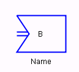

Edit: Opens the edit dialog for the socket input.

Name: The name of the socket input.
Identifier: The identifier used in the TCP messages. (Default: <empty>)

See Socket IO.
Socket Bool In is a boolean socket input.
msg: true if assigned since previous scan cycle.
Note: Edit is chosen automatically instead of showing a context menu with only one choice.
Edit: Opens the edit dialog for the socket input.
Name: The name of the socket input.
Identifier: The identifier used in the TCP messages. (Default: <empty>)